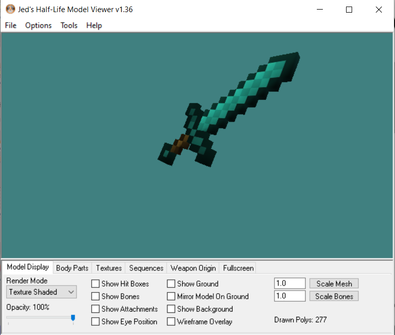
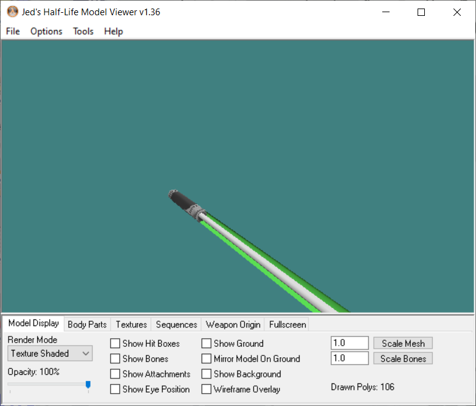
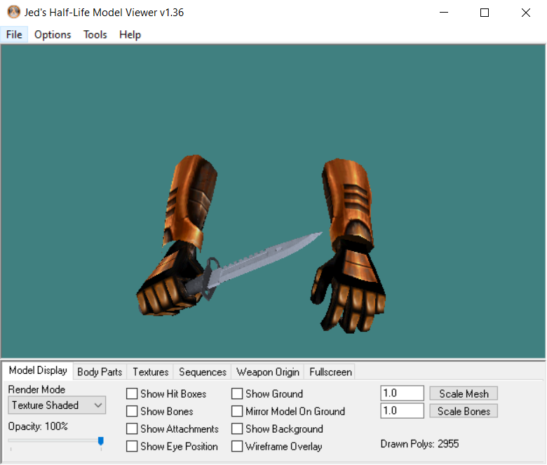
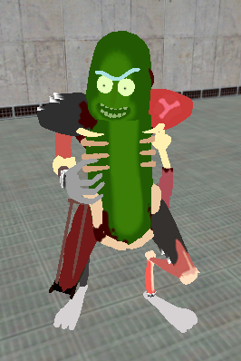

J'ai découvert le modding assez tard dans mes projets informatiques et vidéo ludiques, il n'y a donc à ce jour un seul projet, mais je trouvais intéressant de le partager car il m'a beaucoup apprit.
Cette map est complète, elle regroupe l'ensemble des mods que j'ai pu intégrer et/ou créer pour le jeu. Vous pouvez la télécharger ici cliquez ici
Pour les armes je suis directement allé télécharger le sdk de de Half Life que j'ai utilisé pour générer les fichiers .dll (code source) afin d'ajouter des slots pour la crowbar afin d'avoir différentes armes de mêlée avec des styles que j'ai adaptés :
  Pour le pnj, de la même manière que pour les armes, j'aurai pu me contenter de modifier le look d'un pnj déjà existant mais pour des raisons pratiques, j'en ai créé un de 0, de cette manière je l'ai rendu intuable, l'intéraction est unique et il ne peut pas se déplacer.
Pour modifier la physique et la logique du jeu, j'ai du encore utiliser le sdk de de Half Life. Je me suis directement attaqué au code source donc pour, comme mentionné plus tôt rajouter des slots d'armes inexistants, rendre le joueur invincible (éviter les dégâts de chute), enlever des sons à des items, ou ajouter des events listeners
par exemple si l'on intéragit avec le pnj créé une musique personnalisé se déclenche
Encore en projet, ce mod aura pour but d'ajouter au jeu un item craftable et portable afin d'agrandir son inventaire.